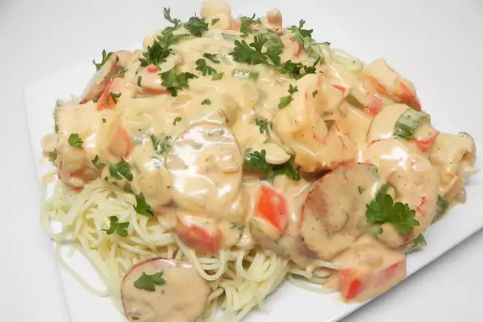

Cajun Shrmip

Description
Enjoy this easy spicy and creamy recipe! Best served angel hair or bow tie pasta.
Ingredients
- 1/2 pound andouille sausages, diced
- 1 pound pasta, angle hair or bowtie
- 1/4 onion, diced
- 1/4 cup diced celary
- 1/4 cup diced red bell pepper
- 2 teaspoons cajun seasoning
- 1/4 teaspoon dried sage
- 1 pound raw shrimp, peeled and deveined
- 1 1/4 cups milk
- 1 package dry Alfredo sauce mix (1 Jar of Reggo Alfredo Sauce)
- 1 tablespoon butter
- 1/2 cup freshly grated Parmesan cheese
- 2 teaspoons minced garlic, divided
Steps
- Combine sausage, onion, celery, red bell pepper, Cajun seasoning, and sage in a skillet; cook and stir until sausage is cooked through and celery and bell pepper are softened, 5 to 10 minutes. Add shrimp and cook until cooked through and bright pink, about 5 minutes. Remove skillet from heat.
- Whisk milk, Alfredo sauce mix, and butter together in a saucepan; bring to a boil. Reduce heat to low and simmer sauce, stirring occasionally, until smooth and thickened, about 2 minutes. Stir Parmesan cheese and garlic into sauce until cheese is melted. Stir shrimp mixture into sauce.
Bon appetit!